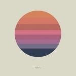
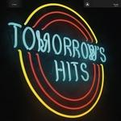

Music Reviews
-
Liars Mess
Liars continue to mold art from circuits with their seventh album, Mess, their third release as a Los Angeles band which goes a long way to confirm that they're home where they belong.
Sean Caldwell reviews... -

Joan As Police Woman The Classic
Serial collaborator Joan As Police Woman returns for her first album since 2011's The Deep Field. Can it be as good as its confident title suggests?
Joe Rivers reviews... -
Linda Perhacs The Soul of All Natural Things
It sounds like the plot of a rather good novel: Linda Perhacs records a follow-up to her lost cult-classic debut album Parallelograms (1970) having spent the 44-year interim working as a dental hygienist.
Stephen Wragg reviews... -

Tycho Awake
The established San Francisco-bred producer returns with yet another excursion into soothing ambient soundscapes.
Juan Edgardo Rodríguez reviews... -

The War On Drugs Lost In The Dream
After much meticulous fine-tooth combing, Philadelphia's The War On Drugs release their long awaited follow up to hugely acclaimed 2011 effort, Slave Ambient. Is it worth the wait?
Graeme Marsh investigates... -
Neneh Cherry Blank Project
Neneh Cherry's first solo record in 18 years gives her a slate as "blank" as its title: she collaborates with RocketNumberNine and Four Tet to create something hauntingly sparse, obsessed with self-imposed limitations.
Stephen Wragg does the dive every time we dance... -

MØ No Mythologies to Follow
Danish singer-songwriter MØ has released some of the best pop songs of the last couple of years. Can she keep up her streak on her debut album?
Mark Davison pronounces it as "moo"... -

The Men Tomorrow's Hits
With their first "proper" studio album, The Men attempt to tighten the screws even further on Tomorrow's Hits, resulting in a wonderful sounding rock record with big hooks and a few surprises, though you may have to wade through a bit of schmaltz to find them.
Peter Quinton grows a beard and chews on raw meat in writing his manliest review yet... -

Elbow The Take Off and Landing of Everything
Elbow's sixth effort is a work of faultless skill and assured sophistication, positioning them as one of the most quietly ambitious and rewarding acts of our generation.
Juan Edgardo Rodríguez reviews... -
Eagulls Eagulls
They may be easy to underestimate, but the self-titled debut from these Leeds post-punk newcomers wraps hooks and noise in such a fully formed package that they swiftly transcend a reputation as snot-nosed punks.
Peter Quinton has always considered birdwatching a hobby...